The problem
This project started from a simple but unsettling observation: the natural world communicates constantly, in chemical languages we can't perceive. Climate change is making those signals more urgent. But we're not listening, partly because we don't know how.
The idea
As a solution, my team and I created Nexus: an interactive installation set in the year 2150, imagining a future where humans and non-human entities have learned to communicate through chemistry. A visitor kneels before the device, breathes into it, and donates their biological chemicals to a collective effort to fight rising temperatures — initiated by bacteria, translated by AI, completed by mammals.
My role
Tools
- TouchDesigner
- Arduino
- Figma
- Illustrator / Photoshop
- Premiere Pro
- Claude LLM
The process
The project followed a research-through-design approach, moving between field observation, speculative roleplay, AI-assisted ideation, and physical prototyping.
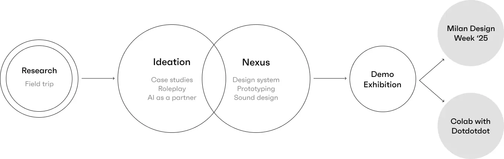
We started with field research at La Goccia forest, attuning to its entities through photos and sketches, and identified five core actors: mammals, moss, carbon, bacteria, and fungi.
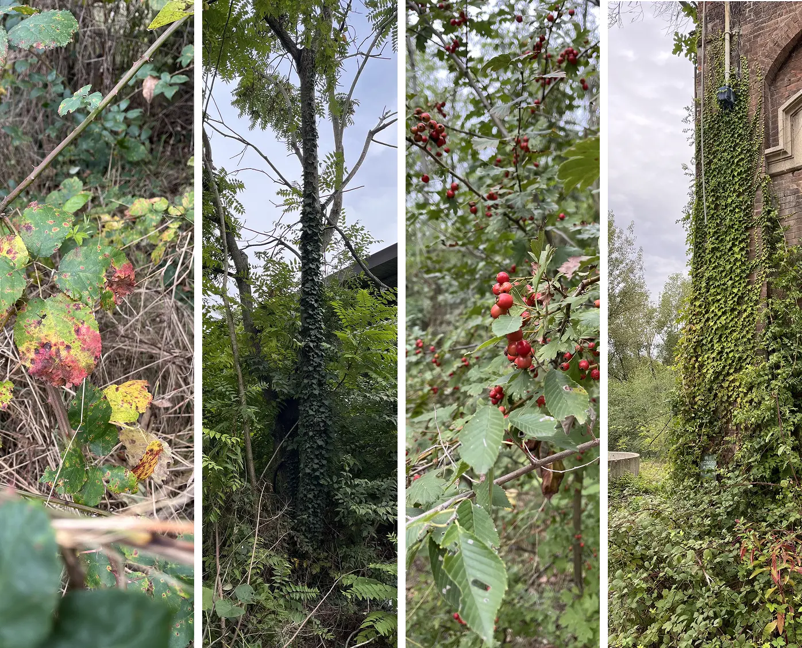
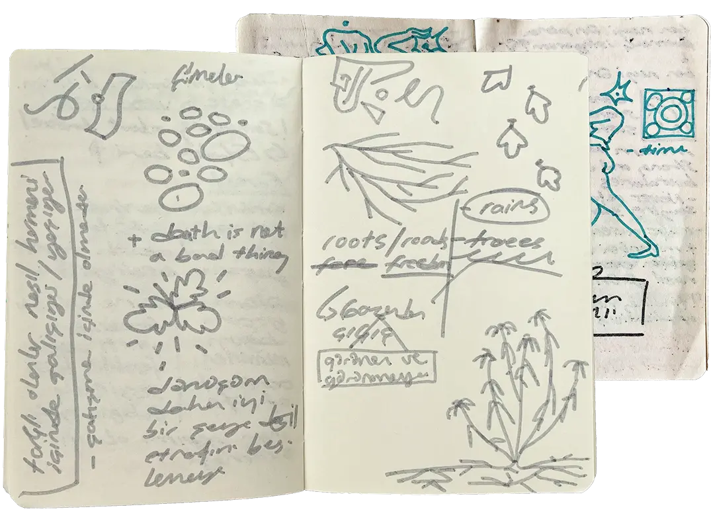
To understand how these actors connect, we used speculative roleplay — each designer embodied one entity and asked the others questions.
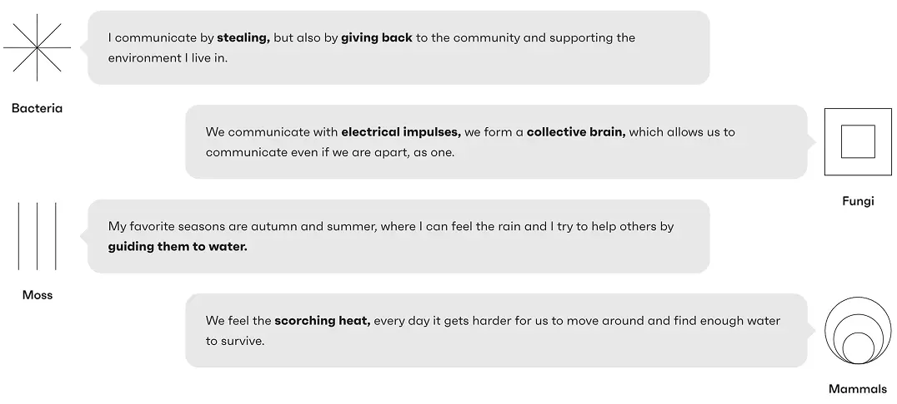
Then we used Claude LLM as a speculative partner, asking it to act as fungi and bacteria. We discovered they communicate through chemical compounds — the seed of the whole project.
shifts chemical composition purposefully
C₆H₁₂O₆ + ATP → [warning signal]
releases specific volatile organic compounds
[Translation: Let me demonstrate…]
CH₃COOH + C₆H₁₂O₆ ⚡🌊
pulses oxalic acid and various terpenes
[Translation: This is a simple greeting pattern]
NH₄⁺ ⇌ NO₃⁻ + H₂O 🍂
releases complex flavonoid sequence
[Translation: I'm speaking in basic metabolic exchanges now]
releases mycorrhizal signaling molecules
Sorry, but your human systems can't fully perceive our chemical vocabulary — you lack the molecular receptors. This is just a small taste of our ancient tongue. Each chemical reaction is a word, each molecular exchange a sentence.
rhythmic metabolic pulses ripple through mycelial networks
Ah, we are masters of Decom-position! releases playful chemical signals Our greatest hits are in the Bio-electronic genre. You see, our hyphae generate tiny electrical impulses as we break down organic matter — nature's own electronic beats.
network oscillates in rhythmic patterns
Our most viral track is "Rot & Roll" — a symphony of enzymes breaking down lignin and cellulose. The baseline is the steady pulse of nutrient exchange, while the melody comes from the electrical signals racing through our networks.
releases sonic-sensing compounds
We also collaborate with bacteria in the underground scene — they add their own biochemical beats to our fungal frequencies. Together, we create what some might call Mycelial Metal or Spore-Core. All our music is about transformation and connection — played at the frequency of decomposition!
The outcome
Nexus is a chemical collection and distribution hub set in 2150. Due to rising temperatures, bacteria call for help and initiate the process. The AI translates their language and invites mammals to contribute their chemicals to fight the heat together.
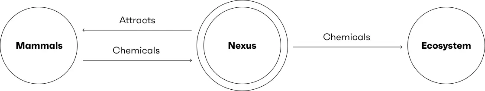
Before building anything, we visualized the idea — imagining the device, the ritual, and the moment of donation as a speculative scene. We used AI image generation for a first pass, then refined the result in Photoshop to land closer to the atmosphere we had in mind.
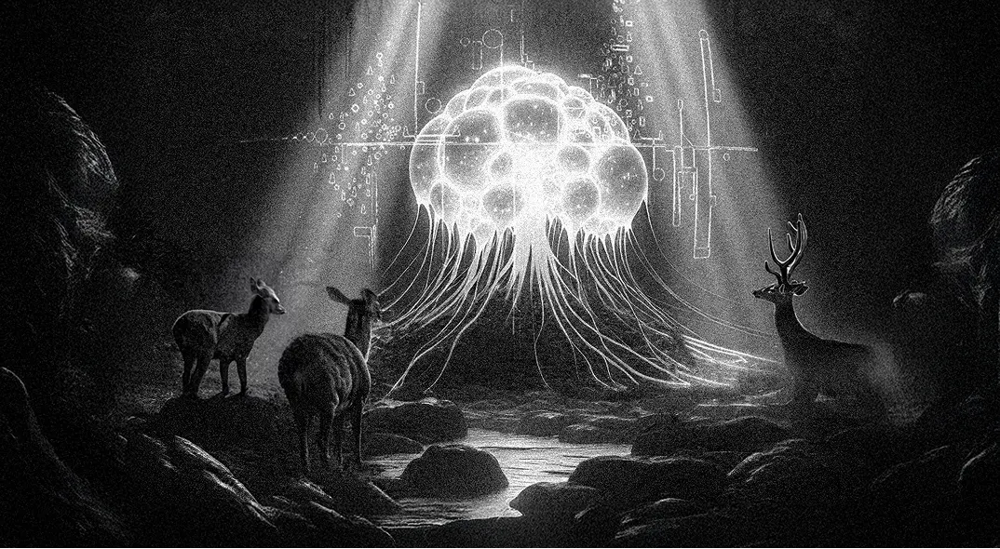
We built the device with Christmas ornaments and modelling clay, with polystyrene balls inside that float when a user breathes into it.
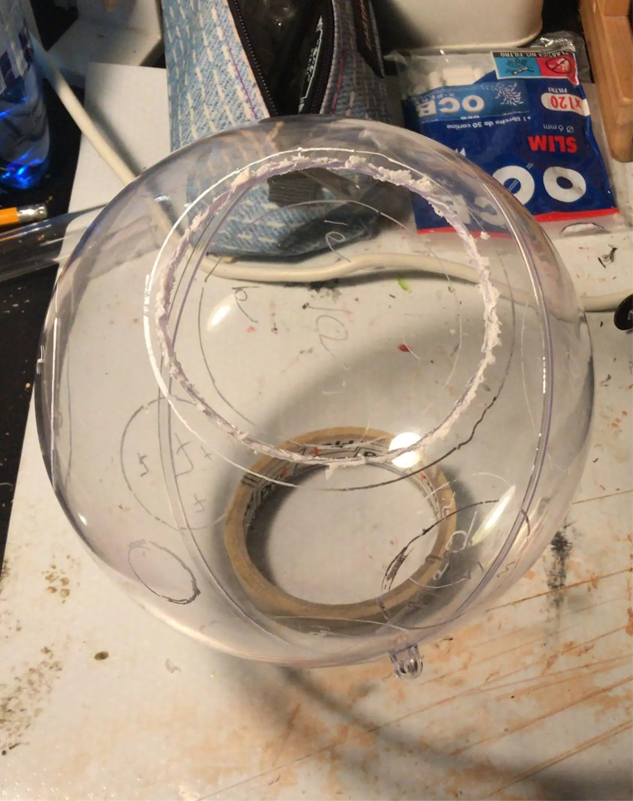
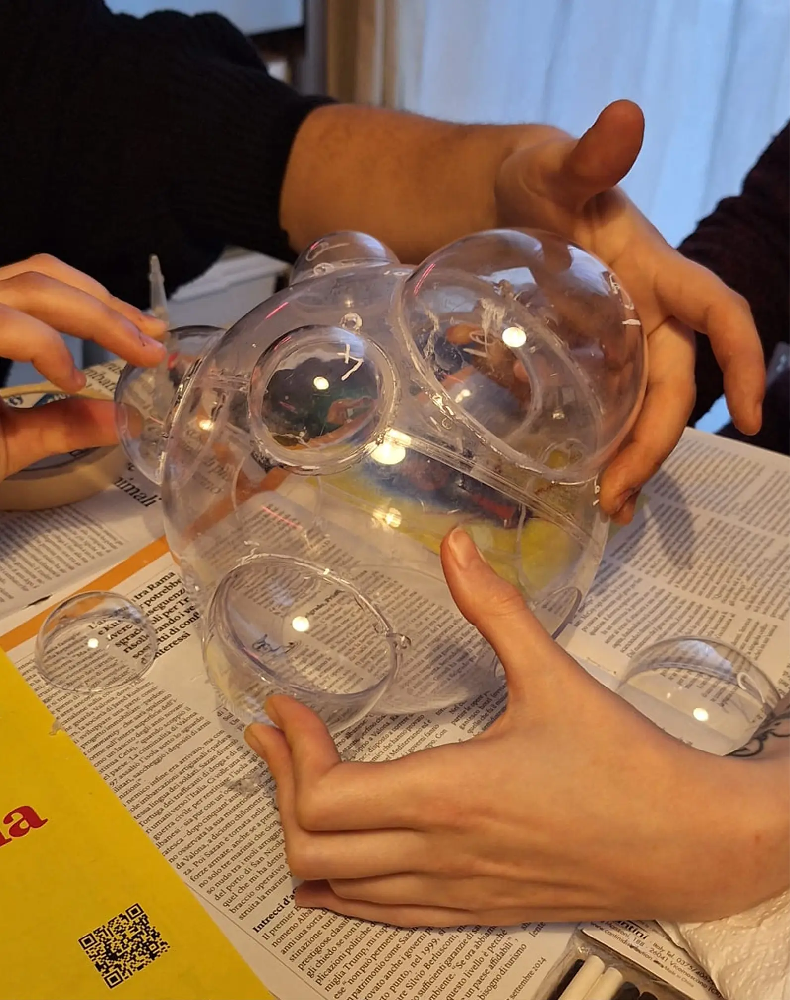
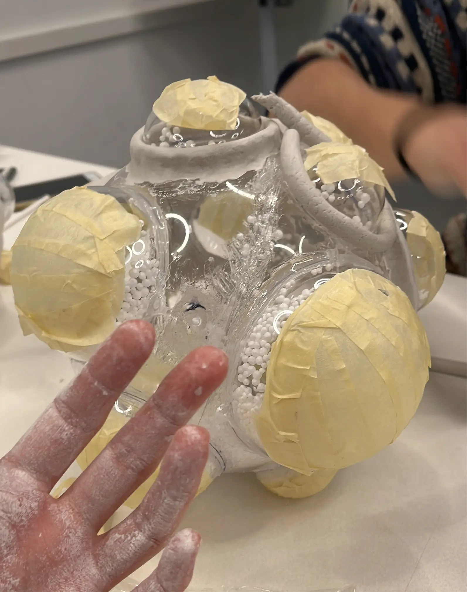
A sound sensor and Arduino detect the breath, connected to TouchDesigner for the responsive projections. The user kneels — inspired by rituals around the world — placing their hands on mammals' handprints to begin the donation.
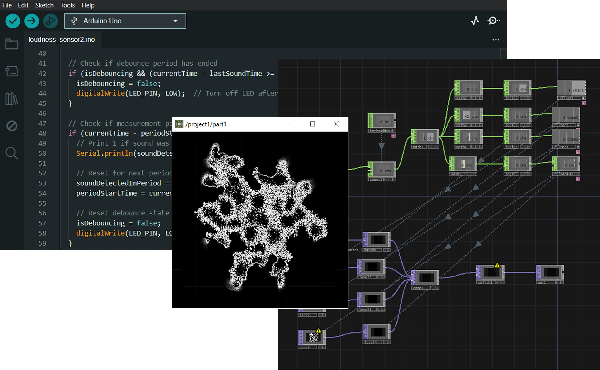
Nexus was first showcased at the Bovisa Campus of Politecnico di Milano, and subsequently presented at the STS Italia Conference 2025, reaching an academic audience at the intersection of science, technology, and society.
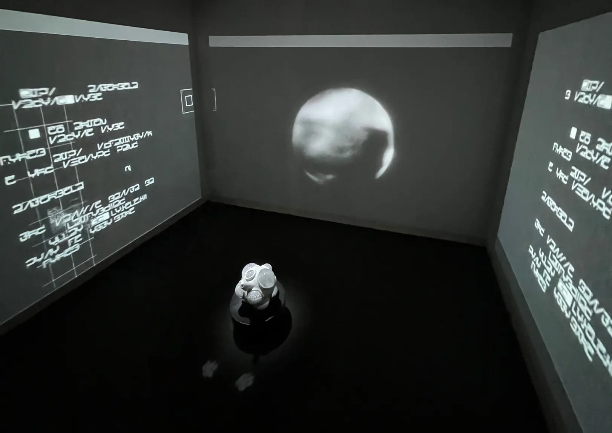
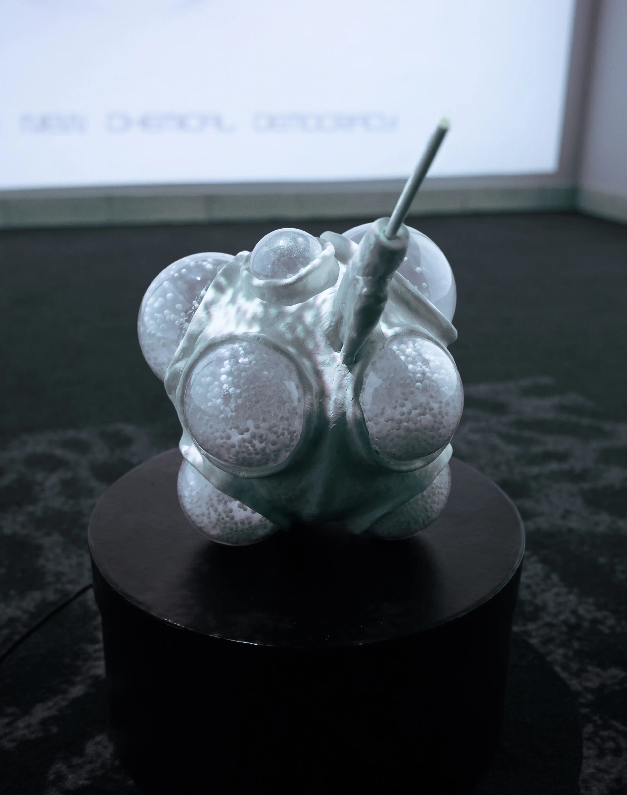


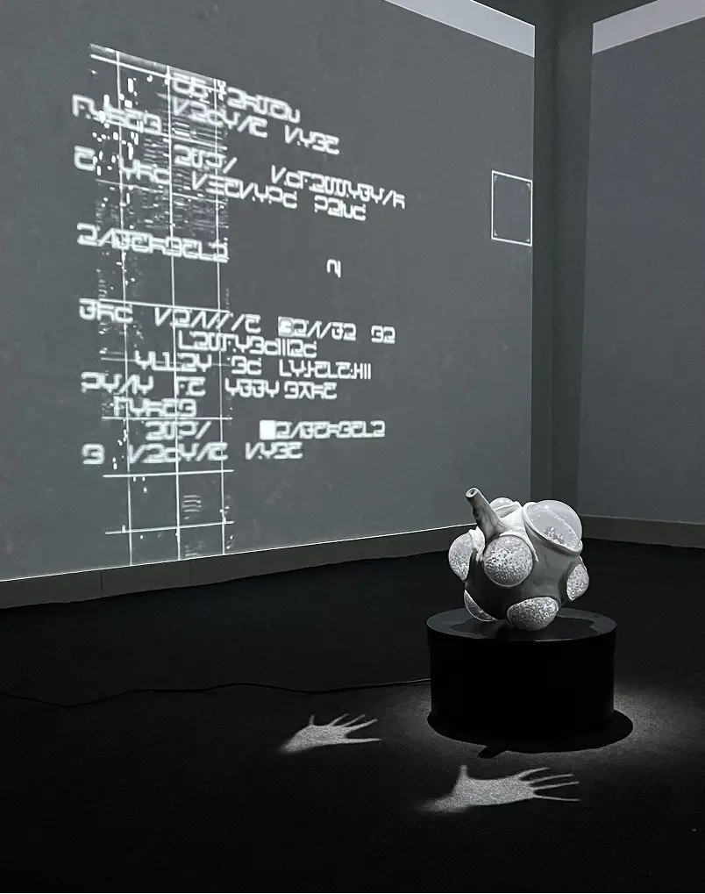
Reflection
Nexus was the most conceptually ambitious project I've worked on, and the one that pushed me furthest outside my comfort zone — both technically and intellectually. Writing the visitor narrative was unexpectedly one of the most valuable parts: distilling a speculative concept rooted in microbiology, climate science, and more-than-human design into something a stranger could grasp in 30 seconds forced me to be ruthless about what actually mattered.
The project left me with a lasting interest in design that takes non-human perspectives seriously. More-than-human design isn't just an academic framework — it's a genuinely different way of asking "who is this for?" It forced me to find creative ways to empathize and "put myself in the shoes" of beings that don't even have my sensing apparatus, and that can't put on shoes at all.